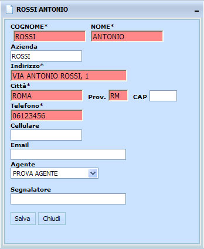
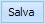
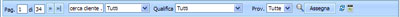
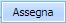
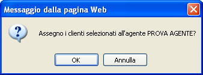

L'assegnazione di un Agente ad un Contatto può essere fatta in modo singolo o multiplo.
ASSEGNAZIONE SINGOLA
1) Selezionare il Contatto dalla lista
2) Cliccare due volte con il tasto sinistro del mouse

3) Scegliere il nome dell'Agente dalla lista del campo Agente
4) Cliccare sul tasto 
ASSEGNAZIONE MULTIPLA

1) Selezionare un gruppo di Contatti dalla lista
Ad Esempio:
con la ricerca - cercare i Contatti non assegnati di una certa Provincia
manualmente - tenendo premuto il tasto shift sulla tastiera e con il mouse cliccando sui nomi dei Contatti
2) Cliccare sul tasto 
3) Scegliere il nome dell'Agente dalla lista
4) Confermare la scelta 